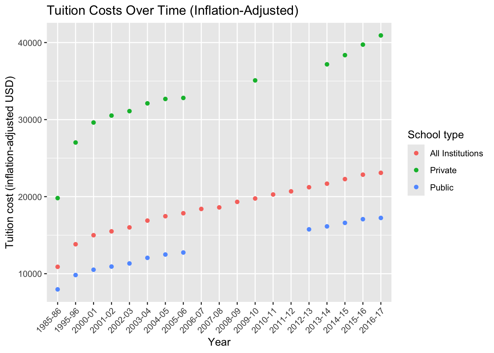

library(tidyverse)
library(tidytuesdayR)Introduction:
In this project, we explore a large higher-education dataset that is organized into five connected CSV files covering tuition costs, income and affordability, enrollment diversity, historical tuition trends, and career outcomes. By looking at these pieces together, we aim to understand how college prices differ by school type and income level, how costs have changed over time, and how those differences connect to salary outcomes and student experiences. Our goal is to use data visualization to identify patterns in affordability and inequality in higher education and to reflect on what those patterns mean for students.
tuition_cost <- readr::read_csv(
"https://raw.githubusercontent.com/rfordatascience/tidytuesday/main/data/2020/2020-03-10/tuition_cost.csv",
show_col_types = FALSE)
tuition_income <- readr::read_csv(
"https://raw.githubusercontent.com/rfordatascience/tidytuesday/main/data/2020/2020-03-10/tuition_income.csv",
show_col_types = FALSE)
salary_potential <- readr::read_csv(
"https://raw.githubusercontent.com/rfordatascience/tidytuesday/main/data/2020/2020-03-10/salary_potential.csv",
show_col_types = FALSE)
historical_tuition <- readr::read_csv(
"https://raw.githubusercontent.com/rfordatascience/tidytuesday/main/data/2020/2020-03-10/historical_tuition.csv",
show_col_types = FALSE)
diversity_school <- readr::read_csv(
"https://raw.githubusercontent.com/rfordatascience/tidytuesday/main/data/2020/2020-03-10/diversity_school.csv",
show_col_types = FALSE)Diversity School Data
The file diversity_school.csv contains information about enrollment composition at colleges. Each row represents a school and a specific demographic category. The variables include the school name, the state where the school is located, the total number of students enrolled, the demographic category such as gender or racial group, and the number of students in that category.
Q1) What percent of the entire student body falls into each category?
percent_category <- diversity_school |>
mutate(pct = enrollment / total_enrollment * 100)
weighted_pct <- percent_category |>
group_by(category) |>
summarise(
total_enrollment_all = sum(total_enrollment, na.rm = TRUE),
total_in_category = sum(enrollment, na.rm = TRUE),
pct_weighted = 100 * total_in_category / total_enrollment_all,
.groups = "drop"
) |>
arrange(desc(pct_weighted))
weighted_pct# A tibble: 11 × 4
category total_enrollment_all total_in_category pct_weighted
<chr> <dbl> <dbl> <dbl>
1 Women 20200711 11406332 56.5
2 White 20200711 10594649 52.4
3 Total Minority 20200711 7609693 37.7
4 Hispanic 20200711 3038062 15.0
5 Black 20200711 2623032 13.0
6 Asian 20200711 1152396 5.70
7 Unknown 20200711 1079537 5.34
8 Non-Resident Foreign 20200711 916832 4.54
9 Two Or More Races 20200711 595001 2.95
10 American Indian / Alaska… 20200711 145875 0.722
11 Native Hawaiian / Pacifi… 20200711 55327 0.274weighted_pct |>
ggplot(aes(x = reorder(category, pct_weighted), y = pct_weighted)) +
geom_col(fill = "steelblue") +
coord_flip() +
geom_text(aes(label = round(pct_weighted, 1)), hjust = -0.1) +
scale_y_continuous(limits = c(0, 100)) +
labs(
title = "Weighted National Enrollment by Category",
x = "Category",
y = "Percent of Total Enrollment"
) +
theme_bw()
The graph above shows the demographic of percent of categories of total enrollment. As we can see 56% of total national enrollment is women (“Boys go to Jupiter to get more stupider, girls go to college to get more knowledge”). We see that 52% of enrollment is white while total minority is 37%. While campuses are diversifying, there is still a significant gap compared to the white student population.
Tuition Income
The file tuition_income.csv contains information about how college costs vary by income level. Each row represents a school and an income bracket for a specific year. The dataset includes the school name, state, total published price of attendance, whether students live on or off campus, the year of the estimate, and the net cost, which reflects the average amount students actually pay after scholarships and financial aid.
Q2) Do higher income students pay closer to the full published tuition price than lower income students?
ti <- tuition_income |>
filter(!is.na(net_cost), !is.na(total_price)) |>
mutate(pay_share = net_cost / total_price)
trend <- ti |>
group_by(year, income_lvl) |>
summarise(avg_share = mean(pay_share, na.rm = TRUE), .groups = "drop")ggplot(trend, aes(x = year, y = avg_share, color = income_lvl)) +
geom_line(linewidth = 1.5) +
labs(
title = "Affordability Gap Over Time by Income Level",
x = "Year",
y = "Ratio of sticker price paid",
color = "Income bracket"
) +
theme_bw()
The chart shows that from 2010 to 2016, the share of the sticker price paid slowly decreased for all income groups, meaning college became slightly more affordable over time. In 2017 there was a sharp drop for all groups. Higher-income groups consistently paid a larger share than lower-income groups throughout the period, so the affordability gap remained even.
Tuition Cost
The file tuition_cost.csv contains information about the published sticker price of attending colleges. Each row represents a school and includes identifying information such as the school name, state, and state abbreviation, along with whether the institution is public, private, or for profit and whether it offers a 2 year or 4 year degree. The dataset provides detailed cost variables including room and board, in state tuition, out of state tuition, and the total estimated cost for both in state and out of state students.
Q3) How does sticker price differ between public, private, and for-profit schools?
tc_summary <- tuition_cost |>
group_by(type) |>
summarise(
avg_in_state = mean(in_state_total, na.rm = TRUE),
avg_out_state = mean(out_of_state_total, na.rm = TRUE),
.groups = "drop"
)
tc_long <- tc_summary |>
pivot_longer(
cols = c(avg_in_state, avg_out_state),
names_to = "tuition_type",
values_to = "cost"
)ggplot(tc_long, aes(x = type, y = cost, fill = tuition_type)) +
geom_col(position = "dodge") +
labs(
title = "Average Sticker Price by School Type",
x = "School type",
y = "Average total cost (USD)",
fill = "Tuition type"
) +
theme_bw()
Here we see the average sticker price by school type. It interesting to see how “For Profit” and “Private” are the same when it comes to in state and out of state prices. “Public” schools tend to give better deals to in state students versus out of state students. Private schools have the highest sticker price nearing $40,000, however while their sticker price is high, it is important to recognize that private schools tend to give out much more financial aid than other schools.
Historical Tuition
The file historical_tuition.csv contains historical information about tuition costs over time. Each row represents a school type and academic year, with values adjusted to reflect different tuition measures. The dataset includes the type of school such as all schools, public, or private, the academic year, the tuition type indicating whether values are inflation-adjusted or reported in current dollars and whether they refer to 2 year or 4 year programs, and the tuition cost in US dollars.
Q4) How have inflation-adjusted tuition costs changed over time?
historical_inf_timeline <- historical_tuition %>%
filter(tuition_type == "All Constant")ggplot(historical_inf_timeline, aes(x = year, y = tuition_cost, colour = type)) +
geom_point() +
labs(
title = "Tuition Costs Over Time (Inflation-Adjusted)",
x = "Year",
y = "Tuition cost (inflation-adjusted USD)",
colour = "School type"
) + theme(
axis.text.x = element_text(angle = 45, hjust = 1)
)
In the graph above we can see the trend line from 1985 to 2017 of Tuition Costs. We can see the seperation between Private and Public schools tuition wise with private schools being much more expensive as well as increase more sharply over time.
Q5) How do 2-year vs 4-year tuition costs compare?
historical_tuition_2yv4y <- historical_tuition %>%
filter(tuition_type %in% c("4 Year Constant", "2 Year Constant")) %>%
filter(year %in% c("1985-86", "1995-96", "2005-06", "2015-16")) %>%
mutate(year = factor(year, levels = c("1985-86", "1995-96", "2005-06", "2015-16")))ggplot(historical_tuition_2yv4y,
aes(x = year, y = tuition_cost, fill = tuition_type)) +
geom_col(position = "dodge") +
facet_wrap(~type) +
theme_minimal() +
theme(axis.text.x = element_text(angle = 45, hjust = 1)) +
labs(
title = "Tuition Costs Over Time",
x = "Year",
y = "Tuition cost (inflation-adjusted USD)",
fill = "Tuition type"
)
We can see the difference between tuition cost from 1985 to 2016 between 2 and 4 year schools from both private and public institutions. Throughout time we see the price gap split more and more between 2 and 4 year schools in both private and public settings.
Salary Potential
The file salary_potential.csv contains information about career outcomes associated with colleges. Each row represents a school and includes variables describing estimated earnings and student perceptions. The dataset provides the school name, state, salary rank within the state, estimated early career and mid career pay in US dollars, the percent of alumni who feel they are making the world a better place, and the percent of students in STEM fields.
Q6) Is higher salary related to alumni feeling they make the world better?
salary_clean <- salary_potential |>
drop_na(make_world_better_percent, mid_career_pay)ggplot(salary_clean,
aes(x = make_world_better_percent, y = mid_career_pay)) +
geom_point() +
labs(
title = "Salary vs Making the World a Better Place",
x = "Percent of alumni who think they are making the world a better place",
y = "Estimated mid-career pay in USD"
) +
theme_bw()
As you can see from the scatter plot above there seems to be a slight negative correlation between percent of alumni who think they are making the world a better place and estimated mid-career pay in USD, shedding light on the idea that often times having jobs with a strong positive impact on the world is not compensated as much as jobs that might not make the world that much of a better place.
Q7) What is average mid-career pay by state?
state_salary_potential <- salary_potential |>
group_by(state_name) |>
summarise(avg_mid_career_pay = mean(mid_career_pay, na.rm = TRUE), .groups = "drop")library(maps)
state_df <- ggplot2::map_data("state")
state_salary_potential <- state_salary_potential |>
mutate(state_name = str_to_lower(state_name)) |>
mutate(state_name = str_replace_all(state_name, "-", " "))state_full <- right_join(state_df, state_salary_potential, by = c("region" = "state_name"))ggplot(state_full, aes(x = long, y = lat, group = group)) +
geom_polygon(colour = "black", aes(fill = avg_mid_career_pay)) +
coord_map(projection = "albers", lat0 = 39, lat1 = 45) +
scale_fill_viridis_c(option = "magma") +
theme_bw()
Here we can see a spread of the average estimated mid career salary of the students that attended colleges in the state. As we can see both New York/Northeast and California have the highest average mid career earnings while southern states have the lower earnings.
Q7) What is average percent of alumni that think they are making the world a better place by state?
state_world_potential <- salary_potential |>
group_by(state_name) |>
summarise(avg_percent_world_postive = mean(make_world_better_percent, na.rm = TRUE), .groups = "drop")library(maps)
state_df2 <- ggplot2::map_data("state")
state_world_potential <- state_world_potential |>
mutate(state_name = str_to_lower(state_name)) |>
mutate(state_name = str_replace_all(state_name, "-", " "))state_full2 <- right_join(state_df2, state_world_potential, by = c("region" = "state_name"))ggplot(state_full2, aes(x = long, y = lat, group = group)) +
geom_polygon(colour = "black", aes(fill = avg_percent_world_postive)) +
coord_map(projection = "albers", lat0 = 39, lat1 = 45) +
scale_fill_viridis_c(option = "magma") +
theme_bw()
In the graph above we almost see the colors flip. This shows the average percent of alumni from each state who think they are making the world a better place. This is in line from our previous idea that the states who tend to have higher salaries tend to have lower percentages of alumni who think they are making the world a better place.
Conclusion
Some flaws with our current approach is when we look at state average estimated salary there are major wealth distributions within states (i.e. NYC is a lot more wealthy than upstate NY). Additionally sticker tuition price versus the actual tuition price is very different in the sense that scholarships/grants/financial can significantly lower the price of an institution. A prime example is St. Lawrence, which has a high sticker price but gives out a lot of scholarships and grants.
If we have more data or time we could look into a cost of living adjustment. States like California tend to have higher costs of living there tend to have higher salaries compared to southern states which is the opposite. It would be interesting to look at the ratio between cost of living and estimated salary to see if there is any variability between states. Additionally it would be interesting to look at data post Covid-19 pandemic.
Connection to Class Ideas
Looking at some of our graphs, we tried to display different trends depending on groups whether it was regions, diversity, type of school etc. It is important to take the context of the group and what we are comparing to make a graph. An example of this is that rather than taking all 50 states and comparing there estimate salary in a bar plot, we instead plotted them on a map with a colour scale to show regional similarities and differences. Additionally this method is useful as the map adds a sense of visual appeal to the viewer.